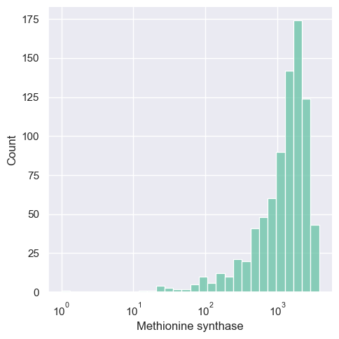
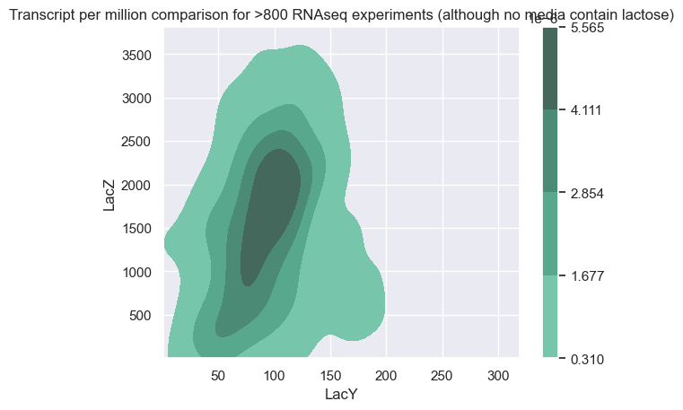

[312]:
%%html
<style>
/* Any CSS style can go in here. */
.dataframe th {
font-size: 8px;
}
.dataframe td {
font-size: 8px;
}
</style>
[313]:
import pandas as pd
import numpy as np
import matplotlib.pyplot as plt
import seaborn as sns
import polars as pl
sns.set(style="darkgrid", palette="Set2")
[314]:
meta = pd.read_csv("external_data/PRECISE2_metadata.tsv", sep="\t")
[315]:
df = pd.read_csv("external_data/PRECISE2_counts.csv")
gene_col = df.loc[:, "Geneid"]
df = df.drop("Geneid", axis=1) / df.drop("Geneid", axis=1).sum() * 10**6
df["Geneid"] = gene_col
df
[315]:
| ecoli_00178 | ecoli_00188 | ecoli_00825 | ecoli_00057 | ecoli_00471 | ecoli_00215 | ecoli_00270 | ecoli_00100 | ecoli_00019 | ecoli_00837 | ... | ecoli_00800 | ecoli_00195 | ecoli_00265 | ecoli_00037 | ecoli_00419 | ecoli_00567 | ecoli_00784 | ecoli_00544 | ecoli_00338 | Geneid | |
|---|---|---|---|---|---|---|---|---|---|---|---|---|---|---|---|---|---|---|---|---|---|
| 0 | 175.274785 | 5.256807 | 191.287196 | 142.556361 | 5.047808 | 169.832825 | 8.696096 | 215.131459 | 2.001814 | 55.115122 | ... | 203.718447 | 51.317742 | 44.647460 | 1.561809 | 33.781602 | 79.520490 | 15.467144 | 7.961227 | 46.077434 | b0001 |
| 1 | 819.702311 | 3891.351329 | 5292.220000 | 1267.338341 | 189.956987 | 4080.023434 | 2193.088443 | 4421.078699 | 487.210644 | 5217.680469 | ... | 3095.115440 | 4867.692824 | 2645.842067 | 2307.416468 | 3641.316035 | 3781.275661 | 3010.733126 | 303.024222 | 6775.297708 | b0002 |
| 2 | 206.325401 | 1152.801332 | 1438.288251 | 450.711599 | 158.076094 | 1255.417695 | 930.816706 | 1226.334126 | 260.543745 | 1296.765239 | ... | 1130.520302 | 1473.229174 | 708.478373 | 763.724552 | 1050.068450 | 835.493718 | 729.865416 | 119.252554 | 1984.800431 | b0003 |
| 3 | 203.780268 | 1540.983668 | 1832.917814 | 469.452845 | 174.813563 | 1622.772261 | 1345.051880 | 1509.595259 | 206.648762 | 1619.483346 | ... | 1056.994333 | 1970.714392 | 762.127336 | 901.476097 | 1713.635631 | 1150.521717 | 1202.608710 | 136.170162 | 2467.835557 | b0004 |
| 4 | 13.065013 | 20.534402 | 28.542390 | 12.903809 | 42.773531 | 35.311776 | 45.152805 | 85.939505 | 8.161240 | 27.846425 | ... | 32.313961 | 44.531925 | 12.122025 | 10.620301 | 49.394947 | 49.803084 | 45.176311 | 16.254173 | 30.758183 | b0005 |
| ... | ... | ... | ... | ... | ... | ... | ... | ... | ... | ... | ... | ... | ... | ... | ... | ... | ... | ... | ... | ... | ... |
| 4350 | 35.971205 | 27.598236 | 22.514804 | 37.175258 | 17.534491 | 30.715640 | 14.382004 | 33.640793 | 31.721047 | 25.073337 | ... | 40.743689 | 36.049654 | 24.604111 | 34.359796 | 36.052634 | 18.323776 | 23.583566 | 12.273559 | 30.877865 | b4399 |
| 4351 | 15.270794 | 11.581403 | 8.509532 | 15.668910 | 3.719438 | 12.106894 | 7.191002 | 8.198176 | 12.780810 | 8.203718 | ... | 21.074322 | 14.278490 | 13.442246 | 9.370853 | 6.245338 | 15.269813 | 2.450241 | 8.292945 | 10.771348 | b4400 |
| 4352 | 1626.000258 | 1027.295066 | 729.869682 | 546.875696 | 1704.565078 | 881.112875 | 969.280206 | 561.151047 | 2427.122049 | 718.229772 | ... | 1046.223013 | 590.931575 | 1201.880810 | 1776.089081 | 522.195435 | 635.341701 | 744.873140 | 678.362926 | 431.452337 | b4401 |
| 4353 | 3.054159 | 0.328550 | 2.836511 | 4.608503 | 4.250786 | 1.905715 | 4.180815 | 4.240436 | 0.461957 | 2.195361 | ... | 3.278228 | 1.837825 | 3.000501 | 1.561809 | 1.419395 | 8.339667 | 1.071980 | 4.312332 | 1.795225 | b4402 |
| 4354 | 27.996456 | 24.477007 | 22.514804 | 23.349749 | 23.644996 | 31.724548 | 66.056881 | 34.206185 | 42.038087 | 35.703507 | ... | 40.275371 | 34.353199 | 34.805815 | 40.607031 | 17.458559 | 44.987220 | 18.070524 | 19.903069 | 28.364550 | b4403 |
4355 rows × 821 columns
[316]:
experiments_anaero = meta[meta["study"] == "ICA"].loc[:, ["Experiment", "condition_id"]]
experiments_anaero
exp_ids = list(experiments_anaero.loc[:, "Experiment"])
exp_cond = list(experiments_anaero.loc[:, "condition_id"])
[317]:
output = df.loc[df["Geneid"] == "b3349", exp_ids]
output.columns = exp_cond
output.transpose()
[317]:
| 3324 | |
|---|---|
| wt_glc | 907.760571 |
| wt_glc | 875.227940 |
| wt_glc | 1208.981078 |
| wt_glc | 1058.209773 |
| arg_sbt | 474.339861 |
| arg_sbt | 578.915884 |
| cytd_rib | 616.583642 |
| cytd_rib | 623.980218 |
| gth | 1422.243376 |
| gth | 2063.423682 |
| leu_glcr | 580.191680 |
| leu_glcr | 609.673237 |
| met_glc | 987.862230 |
| met_glc | 1041.589014 |
| no3_anaero | 1079.302039 |
| no3_anaero | 1091.136328 |
| phe_acgam | 776.366796 |
| phe_acgam | 785.797843 |
| thm_gal | 675.048505 |
| thm_gal | 715.747118 |
| tyr_glcn | 809.268033 |
| tyr_glcn | 835.791500 |
| ura_pyr | 805.150798 |
| ura_pyr | 815.206345 |
| wt_glc | 963.000973 |
| wt_glc | 952.214563 |
| bw_delpurR_cytd | 845.541089 |
| bw_delpurR_cytd | 1466.166167 |
| ade_glc | 1388.546350 |
| ade_glc | 852.301480 |
Check environments with hydrogenase activation
[318]:
goi = ["b097"+str(i) for i in np.arange(2,8)] + ["b24"+str(i) for i in np.arange(81,93)] + ["b27"+str(i) for i in np.arange(17,26)] + ["b299"+str(i) for i in np.arange(0,8)]
goi
[318]:
['b0972',
'b0973',
'b0974',
'b0975',
'b0976',
'b0977',
'b2481',
'b2482',
'b2483',
'b2484',
'b2485',
'b2486',
'b2487',
'b2488',
'b2489',
'b2490',
'b2491',
'b2492',
'b2717',
'b2718',
'b2719',
'b2720',
'b2721',
'b2722',
'b2723',
'b2724',
'b2725',
'b2990',
'b2991',
'b2992',
'b2993',
'b2994',
'b2995',
'b2996',
'b2997']
[319]:
hydrogenase_expr = df.loc[df["Geneid"].isin(goi), :]
hydrogenase_expr = hydrogenase_expr.set_index("Geneid").transpose()
hydrogenase_expr.sort_values("b2995").tail(40)
[319]:
| Geneid | b0972 | b0973 | b0974 | b0975 | b0976 | b0977 | b2481 | b2482 | b2483 | b2484 | ... | b2724 | b2725 | b2990 | b2991 | b2992 | b2993 | b2994 | b2995 | b2996 | b2997 |
|---|---|---|---|---|---|---|---|---|---|---|---|---|---|---|---|---|---|---|---|---|---|
| ecoli_00150 | 2.038902 | 4.077804 | 3.171625 | 5.663616 | 1.585813 | 4.983982 | 0.906179 | 7.702518 | 0.000000 | 0.906179 | ... | 8.382152 | 14.725402 | 21.974830 | 22.201375 | 58.901607 | 102.624724 | 264.377599 | 135.020608 | 219.068670 | 304.702546 |
| ecoli_00337 | 20.727883 | 26.650135 | 10.541609 | 8.883378 | 4.264022 | 10.423164 | 0.236890 | 3.434906 | 0.000000 | 0.829115 | ... | 1.066005 | 0.473780 | 15.042521 | 21.912333 | 49.983809 | 89.426008 | 379.261031 | 135.501130 | 179.444242 | 230.257166 |
| ecoli_00332 | 18.184774 | 29.603120 | 10.065061 | 8.288874 | 3.806115 | 11.164605 | 0.422902 | 3.298633 | 0.169161 | 0.845803 | ... | 0.507482 | 0.338321 | 15.309042 | 17.592711 | 65.972668 | 102.765118 | 462.231578 | 141.502915 | 201.385798 | 299.076095 |
| ecoli_00476 | 19.756117 | 24.492964 | 6.700905 | 5.892175 | 3.003854 | 6.238774 | 0.115533 | 1.732993 | 0.115533 | 1.386394 | ... | 0.808730 | 0.577664 | 11.206686 | 12.824146 | 72.670162 | 111.720264 | 563.338169 | 144.416061 | 184.390426 | 230.719098 |
| ecoli_00345 | 17.855998 | 29.681163 | 8.750622 | 8.632370 | 5.084821 | 11.825164 | 0.118252 | 2.956291 | 0.354755 | 1.537271 | ... | 0.473007 | 0.591258 | 14.781456 | 22.349561 | 61.372604 | 96.729845 | 405.721393 | 146.395536 | 194.287452 | 256.487817 |
| ecoli_00338 | 19.986835 | 30.159775 | 10.771348 | 7.779307 | 5.984082 | 10.771348 | 0.718090 | 2.872360 | 0.478727 | 0.718090 | ... | 0.478727 | 0.718090 | 19.029382 | 19.388427 | 62.593501 | 92.992640 | 408.712824 | 146.729699 | 198.073125 | 264.975166 |
| ecoli_00311 | 2.627034 | 2.627034 | 2.268802 | 3.343498 | 0.716464 | 2.985266 | 1.074696 | 2.746445 | 0.835875 | 2.627034 | ... | 1.791160 | 0.716464 | 7.761693 | 10.508138 | 22.926846 | 55.048312 | 204.311632 | 149.860373 | 370.889497 | 666.550281 |
| ecoli_00333 | 9.182184 | 16.527932 | 5.219347 | 8.215639 | 3.189601 | 5.219347 | 0.289964 | 3.576219 | 0.483273 | 1.353164 | ... | 0.773237 | 0.289964 | 15.658041 | 17.784441 | 65.725109 | 98.201046 | 441.711397 | 157.063680 | 199.108420 | 275.562186 |
| ecoli_00475 | 16.670743 | 18.461814 | 6.337638 | 5.648764 | 2.066621 | 6.613187 | 0.137775 | 3.031044 | 0.275549 | 1.102198 | ... | 0.413324 | 0.275549 | 10.608654 | 15.430770 | 90.655773 | 123.032835 | 541.454695 | 157.200969 | 169.187370 | 229.946027 |
| ecoli_00144 | 13.629811 | 24.854361 | 12.026304 | 19.242086 | 4.409645 | 16.435949 | 0.801754 | 6.414029 | 1.603507 | 3.207014 | ... | 1.202630 | 0.000000 | 28.462253 | 29.264006 | 99.818323 | 119.461286 | 316.291793 | 157.945458 | 284.622526 | 505.104765 |
| ecoli_00331 | 16.138409 | 21.322262 | 9.976471 | 8.215917 | 5.183853 | 7.531258 | 0.391234 | 3.325490 | 0.293426 | 0.782468 | ... | 0.195617 | 0.489043 | 14.475664 | 20.246368 | 66.118574 | 102.405542 | 456.081226 | 162.068752 | 222.612239 | 281.492981 |
| ecoli_00133 | 1.589583 | 3.860416 | 0.908333 | 4.087500 | 2.043750 | 2.270833 | 0.000000 | 3.179166 | 0.681250 | 1.816667 | ... | 1.135417 | 1.816667 | 8.629166 | 11.127083 | 30.656248 | 59.495830 | 195.291654 | 168.268739 | 376.731226 | 716.220789 |
| ecoli_00346 | 24.745392 | 38.503830 | 12.372696 | 10.986954 | 7.027691 | 13.461493 | 0.494908 | 3.068429 | 0.692871 | 1.385742 | ... | 0.593889 | 0.197963 | 19.994277 | 25.141318 | 65.228854 | 108.285836 | 460.759202 | 171.733022 | 212.216483 | 283.681176 |
| ecoli_00477 | 2.269234 | 3.120197 | 1.134617 | 1.418272 | 1.040066 | 2.080132 | 0.283654 | 1.418272 | 0.189103 | 0.567309 | ... | 0.756411 | 0.283654 | 6.618600 | 6.807703 | 29.783702 | 43.588212 | 301.429977 | 172.840024 | 340.668823 | 610.234966 |
| ecoli_00503 | 3.276071 | 6.207293 | 1.379398 | 3.793345 | 1.724248 | 3.620921 | 0.517274 | 2.069098 | 0.517274 | 1.206974 | ... | 0.172425 | 0.517274 | 27.243117 | 21.725524 | 82.419051 | 103.627300 | 591.417039 | 174.666315 | 236.049541 | 370.196030 |
| ecoli_00504 | 2.867636 | 5.530441 | 2.662805 | 4.915948 | 1.433818 | 2.662805 | 0.204831 | 1.638649 | 0.204831 | 0.204831 | ... | 0.409662 | 0.000000 | 26.423218 | 24.374907 | 86.029082 | 109.584664 | 626.168818 | 175.949956 | 222.036964 | 378.732792 |
| ecoli_00478 | 2.896699 | 2.317359 | 1.274547 | 1.506283 | 0.231736 | 1.853887 | 0.115868 | 1.738019 | 0.231736 | 0.347604 | ... | 0.115868 | 0.695208 | 6.604473 | 7.763153 | 33.022367 | 53.994467 | 293.609396 | 193.847087 | 325.357215 | 596.024756 |
| ecoli_00073 | 220.722209 | 678.259732 | 197.815966 | 228.710027 | 150.828801 | 280.983249 | 0.000000 | 12.451599 | 0.234936 | 1.409615 | ... | 31.246465 | 38.881879 | 32.891016 | 30.894061 | 113.121601 | 126.043071 | 355.222970 | 202.867086 | 539.765062 | 618.351096 |
| ecoli_00078 | 11.764539 | 25.689912 | 13.445188 | 8.403242 | 6.962686 | 9.123520 | 0.720278 | 8.883428 | 1.920741 | 2.400926 | ... | 3.841482 | 8.643335 | 27.370561 | 21.368245 | 81.151311 | 109.002057 | 383.908127 | 206.719761 | 289.791813 | 607.434372 |
| ecoli_00075 | 7.221629 | 22.835961 | 8.978241 | 6.245733 | 5.269837 | 8.587883 | 0.000000 | 4.879479 | 1.171075 | 1.171075 | ... | 0.975896 | 0.780717 | 17.761303 | 14.052899 | 65.775375 | 76.119870 | 357.958567 | 215.282606 | 344.491205 | 612.277003 |
| ecoli_00487 | 4.842646 | 3.911368 | 1.490045 | 3.352601 | 2.980090 | 2.793834 | 0.372511 | 0.186256 | 0.000000 | 0.186256 | ... | 0.000000 | 0.745022 | 26.075784 | 25.889529 | 95.735380 | 138.015402 | 766.255551 | 230.398181 | 310.301835 | 545.356406 |
| ecoli_00488 | 5.331108 | 5.117863 | 1.705954 | 3.411909 | 1.066222 | 2.558932 | 0.213244 | 1.492710 | 0.000000 | 0.426489 | ... | 0.213244 | 0.000000 | 25.802561 | 27.082027 | 92.761273 | 128.799560 | 793.055571 | 232.649537 | 343.749820 | 536.735916 |
| ecoli_00154 | 4.376747 | 7.815619 | 1.875749 | 3.438872 | 2.500998 | 3.438872 | 0.312625 | 1.563124 | 0.937874 | 0.625250 | ... | 0.625250 | 0.312625 | 25.009981 | 30.324601 | 68.777446 | 90.973804 | 479.253752 | 240.721063 | 492.696617 | 675.894724 |
| ecoli_00343 | 39.022116 | 54.038757 | 16.391404 | 13.113123 | 6.979566 | 17.977669 | 0.211502 | 2.961028 | 0.317253 | 1.057510 | ... | 0.528755 | 0.105751 | 29.927531 | 38.176108 | 99.300182 | 154.290698 | 675.643093 | 246.611315 | 379.011558 | 472.706938 |
| ecoli_00344 | 39.920344 | 56.937670 | 19.192473 | 13.434731 | 8.572638 | 20.471971 | 0.511799 | 3.198745 | 0.511799 | 0.895649 | ... | 0.127950 | 0.127950 | 33.139003 | 42.223440 | 102.359855 | 162.112421 | 703.979905 | 249.374197 | 373.997321 | 470.343535 |
| ecoli_00464 | 333.790526 | 379.988467 | 81.782841 | 63.053946 | 25.804255 | 49.735621 | 0.000000 | 2.080988 | 0.208099 | 1.040494 | ... | 0.624296 | 1.040494 | 26.844749 | 27.052848 | 105.922305 | 139.634316 | 857.367188 | 318.391213 | 545.427039 | 977.024016 |
| ecoli_00463 | 335.939889 | 390.136598 | 95.043492 | 55.989982 | 29.688638 | 49.813151 | 0.199253 | 1.394768 | 0.000000 | 0.597758 | ... | 0.597758 | 2.191779 | 27.496859 | 30.485648 | 108.991174 | 150.037210 | 898.230737 | 326.375765 | 573.050488 | 1005.827142 |
| ecoli_00506 | 99.965666 | 134.521699 | 34.556033 | 27.644826 | 6.911207 | 29.866285 | 0.000000 | 2.715117 | 0.493658 | 0.246829 | ... | 0.493658 | 1.480973 | 20.733620 | 26.657511 | 105.395900 | 129.585123 | 1002.618607 | 331.737914 | 398.875349 | 628.672967 |
| ecoli_00074 | 414.612104 | 1013.795202 | 358.379833 | 330.801805 | 201.252338 | 373.715906 | 1.210743 | 4.977498 | 1.479797 | 0.538108 | ... | 26.501812 | 35.111538 | 29.730459 | 34.304376 | 103.451235 | 148.248715 | 477.167142 | 334.434033 | 601.739111 | 644.249631 |
| ecoli_00473 | 334.620543 | 364.810602 | 89.389560 | 66.114543 | 33.057271 | 62.235373 | 0.000000 | 1.011957 | 0.000000 | 0.337319 | ... | 1.517936 | 2.529893 | 24.118315 | 29.852740 | 107.267472 | 156.347401 | 968.443124 | 367.677814 | 600.090671 | 998.801843 |
| ecoli_00505 | 93.671628 | 124.035525 | 33.936120 | 30.165440 | 15.082720 | 34.531490 | 0.396914 | 2.778396 | 0.396914 | 1.190741 | ... | 0.396914 | 1.984568 | 25.600932 | 30.760810 | 135.347564 | 157.971644 | 969.064746 | 368.732807 | 406.638064 | 641.809418 |
| ecoli_00474 | 344.855136 | 410.075966 | 93.551127 | 77.449735 | 35.667641 | 55.030075 | 0.000000 | 1.630521 | 0.203815 | 0.203815 | ... | 1.019075 | 2.445781 | 27.922668 | 29.145558 | 113.525006 | 176.096240 | 976.681923 | 395.808909 | 642.017541 | 1075.736058 |
| ecoli_00490 | 127.343889 | 164.808830 | 40.971512 | 27.129785 | 13.472614 | 31.743694 | 0.184556 | 2.399233 | 0.000000 | 0.000000 | ... | 5.721247 | 12.365276 | 37.464941 | 44.478083 | 164.624274 | 227.188880 | 1284.696826 | 482.614883 | 697.069374 | 1102.170586 |
| ecoli_00489 | 125.739642 | 151.159230 | 42.495342 | 31.240868 | 16.687669 | 32.405124 | 0.388085 | 2.522555 | 0.194043 | 0.970213 | ... | 7.373621 | 13.777029 | 38.032361 | 43.659598 | 185.698823 | 244.881834 | 1311.146237 | 508.585805 | 704.762932 | 1114.386982 |
| ecoli_00462 | 37.278737 | 48.532695 | 10.785043 | 9.612756 | 6.095894 | 12.426246 | 0.000000 | 0.468915 | 0.000000 | 0.000000 | ... | 0.234457 | 0.234457 | 61.193398 | 72.447356 | 225.313622 | 324.020214 | 2045.641365 | 610.058319 | 1227.853734 | 2266.969211 |
| ecoli_00472 | 68.278062 | 84.534744 | 20.008223 | 18.757709 | 9.253803 | 24.009868 | 0.000000 | 1.750720 | 0.250103 | 0.250103 | ... | 0.500206 | 0.250103 | 73.530221 | 92.788136 | 246.351250 | 325.633836 | 1837.005009 | 636.511606 | 975.400890 | 1789.235376 |
| ecoli_00471 | 71.997683 | 84.484366 | 15.674772 | 16.471795 | 9.564268 | 22.582299 | 0.000000 | 1.328371 | 0.265674 | 0.265674 | ... | 0.000000 | 0.000000 | 81.296277 | 83.421670 | 257.172537 | 329.967242 | 1875.659204 | 638.680556 | 984.056897 | 1801.801802 |
| ecoli_00468 | 8.553307 | 10.549078 | 3.278768 | 2.851102 | 1.140441 | 3.991543 | 0.285110 | 4.561763 | 0.570220 | 0.855331 | ... | 1.140441 | 1.568106 | 55.596493 | 67.143456 | 247.333115 | 319.466000 | 1773.385560 | 642.495878 | 823.113201 | 1153.413389 |
| ecoli_00461 | 36.025746 | 41.344984 | 10.880259 | 9.913125 | 5.802805 | 12.572744 | 0.241784 | 1.450701 | 0.000000 | 0.000000 | ... | 0.241784 | 0.483567 | 59.478749 | 74.952895 | 248.069903 | 295.217691 | 1880.108735 | 652.090182 | 1052.725493 | 2118.749080 |
| ecoli_00467 | 9.499831 | 8.979293 | 3.904040 | 4.294444 | 1.691751 | 3.643771 | 0.390404 | 4.034175 | 0.130135 | 1.171212 | ... | 0.780808 | 1.821885 | 58.300334 | 70.663129 | 267.036353 | 355.137528 | 1691.230237 | 708.583306 | 839.889193 | 1197.239011 |
40 rows × 35 columns
[320]:
meta.loc[meta["Experiment"]=="ecoli_00213"].transpose()
[320]:
| 204 | |
|---|---|
| Experiment | ecoli_00213 |
| sample_id | ytf__delybaO__1 |
| study | yTF |
| project_id | ytf |
| condition_id | delybaO |
| rep_id | 1 |
| contact | Ye Gao |
| creator | Ye Gao |
| run_date | 10/2/17 |
| Strain Description | Escherichia coli K-12 MG1655 del_ybaO |
| Strain | MG1655 |
| Base Media | M9 |
| Carbon Source (g/L) | glucose(2) |
| Nitrogen Source (g/L) | NH4Cl(1) |
| Electron Acceptor | O2 |
| Trace Element Mixture | sauer trace element mixture |
| Supplement | NaN |
| Temperature (C) | 37 |
| pH | 7.0 |
| Antibiotic for selection | Kanamycin |
| Culture Type | Batch |
| Growth Rate (1/hr) | 0.62 |
| Evolved Sample | No |
| Isolate Type | NaN |
| Sequencing Machine | HiSeq 4000 |
| Additional Details | NaN |
| Biological Replicates | 2 |
| DOI | doi.org/10.1093/nar/gky752 |
| GEO | GSE111094 |
| Published | 1.0 |
| SRX | SRX3989004 |
| Run | SRR7057989 |
| LibraryLayout | PAIRED |
| Platform | ILLUMINA |
[321]:
goi_formate = ["b389"+str(i) for i in np.arange(1,5)] + ["b147"+str(i) for i in np.arange(4,7)] + ["b4079"]
goi_formate
[321]:
['b3891', 'b3892', 'b3893', 'b3894', 'b1474', 'b1475', 'b1476', 'b4079']
[322]:
formate_expr = df.loc[df["Geneid"].isin(goi_formate), :]
formate_expr = formate_expr.set_index("Geneid").transpose()
formate_expr.sort_values("b4079").tail(40)
[322]:
| Geneid | b1474 | b1475 | b1476 | b3891 | b3892 | b3893 | b3894 | b4079 |
|---|---|---|---|---|---|---|---|---|
| ecoli_00558 | 29.940303 | 5.121368 | 7.091124 | 153.247075 | 46.289284 | 51.804602 | 534.001055 | 266.311112 |
| ecoli_00463 | 57.584002 | 16.936471 | 17.534229 | 84.682356 | 185.902679 | 339.127931 | 1635.664622 | 267.197741 |
| ecoli_00464 | 55.146190 | 13.110226 | 17.064104 | 81.990940 | 188.745641 | 331.917637 | 1613.182145 | 271.568976 |
| ecoli_00201 | 79.629899 | 7.189567 | 10.784350 | 92.375040 | 26.906409 | 15.032731 | 119.608247 | 272.441007 |
| ecoli_00075 | 58.553746 | 3.708404 | 7.221629 | 99.346189 | 30.643127 | 16.785407 | 117.888208 | 273.836352 |
| ecoli_00214 | 78.570948 | 5.330190 | 10.166844 | 101.372317 | 25.367756 | 19.050494 | 152.107829 | 275.985392 |
| ecoli_00114 | 143.771816 | 10.501261 | 9.164737 | 186.158726 | 17.374814 | 11.264990 | 88.019664 | 277.806099 |
| ecoli_00467 | 1148.178238 | 293.193423 | 295.405712 | 188.044605 | 124.799153 | 182.448814 | 912.244072 | 282.131976 |
| ecoli_00544 | 21.893376 | 3.814755 | 4.312332 | 187.254705 | 75.963379 | 217.109308 | 1463.704847 | 285.774895 |
| ecoli_00032 | 14.990436 | 2.435946 | 5.621414 | 116.738021 | 25.858502 | 22.673035 | 343.280987 | 287.816373 |
| ecoli_00468 | 1155.124051 | 329.587413 | 290.242203 | 174.772564 | 133.574137 | 174.915119 | 906.507940 | 288.816651 |
| ecoli_00113 | 138.187634 | 10.789425 | 10.996914 | 184.665156 | 14.731715 | 11.204403 | 84.240510 | 294.426806 |
| ecoli_00031 | 13.423662 | 2.570489 | 5.140977 | 113.387104 | 24.562446 | 19.707079 | 343.874240 | 298.462277 |
| ecoli_00575 | 11.908943 | 4.220891 | 8.291036 | 76.277536 | 40.701452 | 49.293981 | 250.540048 | 301.039997 |
| ecoli_00133 | 46.779164 | 6.812500 | 6.358333 | 167.814573 | 26.568748 | 24.979165 | 260.691650 | 306.562481 |
| ecoli_00115 | 151.665965 | 9.039693 | 8.437047 | 189.230913 | 22.498792 | 11.048514 | 76.134306 | 308.755746 |
| ecoli_00593 | 15.392494 | 3.915635 | 7.291182 | 100.861345 | 25.519136 | 31.865164 | 212.524441 | 308.795042 |
| ecoli_00574 | 12.780565 | 4.430596 | 12.610158 | 79.750728 | 35.274360 | 46.691665 | 251.691934 | 312.016202 |
| ecoli_00225 | 52.919720 | 6.751075 | 10.017725 | 86.457321 | 25.588754 | 15.679917 | 131.537083 | 312.618348 |
| ecoli_00760 | 27.412766 | 3.110668 | 8.748755 | 120.149569 | 19.636095 | 10.109672 | 48.993028 | 313.011012 |
| ecoli_00226 | 76.246193 | 4.192231 | 8.515468 | 104.805763 | 23.450290 | 16.768922 | 151.837350 | 314.548298 |
| ecoli_00038 | 10.450769 | 2.359851 | 6.742431 | 134.174384 | 48.545506 | 108.216023 | 732.565168 | 320.265490 |
| ecoli_00559 | 32.901194 | 5.729983 | 5.545145 | 174.672069 | 47.133733 | 58.778538 | 551.926772 | 326.793882 |
| ecoli_00213 | 63.918438 | 4.297964 | 10.028583 | 90.367447 | 26.889826 | 13.775525 | 152.192006 | 334.249351 |
| ecoli_00156 | 67.636118 | 67.636118 | 0.000000 | 405.816706 | 0.000000 | 202.908353 | 541.088941 | 338.180588 |
| ecoli_00073 | 18.794866 | 2.349358 | 10.102241 | 82.110071 | 30.541657 | 12.804003 | 77.763759 | 357.219924 |
| ecoli_00037 | 10.620301 | 3.748341 | 6.559597 | 123.070541 | 55.600397 | 101.517578 | 771.845958 | 361.090218 |
| ecoli_00154 | 125.987777 | 36.889721 | 40.641218 | 150.372508 | 185.699106 | 211.646960 | 740.295424 | 362.019468 |
| ecoli_00074 | 21.524314 | 5.919186 | 5.919186 | 123.226699 | 41.972413 | 21.658841 | 92.016443 | 373.581380 |
| ecoli_00741 | 28.666149 | 4.176525 | 5.125735 | 147.886954 | 22.970888 | 13.668627 | 63.786927 | 376.836461 |
| ecoli_00560 | 43.942101 | 7.964506 | 7.964506 | 220.259780 | 46.139206 | 44.216739 | 483.912385 | 377.078152 |
| ecoli_00150 | 20.615563 | 4.530893 | 6.569795 | 146.574384 | 46.894741 | 8.382152 | 62.526322 | 380.368457 |
| ecoli_00592 | 14.463774 | 4.728541 | 8.344485 | 82.610400 | 25.867903 | 52.570254 | 253.394189 | 380.508507 |
| ecoli_00471 | 16.206121 | 3.719438 | 5.844830 | 213.336309 | 216.790072 | 365.833247 | 1740.962431 | 381.242345 |
| ecoli_00541 | 18.207710 | 4.653081 | 4.855389 | 194.013265 | 94.275476 | 217.480980 | 1478.870661 | 384.384987 |
| ecoli_00472 | 24.009868 | 3.501439 | 8.003289 | 200.332337 | 211.837065 | 353.395245 | 1760.723657 | 384.908197 |
| ecoli_00540 | 20.671231 | 2.782666 | 5.565331 | 205.917259 | 97.194536 | 239.905532 | 1555.510105 | 403.088997 |
| ecoli_00726 | 127.860887 | 31.965222 | 31.965222 | 255.721775 | 95.895666 | 0.000000 | 351.617440 | 415.547884 |
| ecoli_00311 | 40.838444 | 3.940552 | 11.463423 | 118.574781 | 29.733253 | 10.985780 | 78.213980 | 431.669521 |
| ecoli_00145 | 13.509943 | 3.973513 | 4.370864 | 123.576241 | 30.596047 | 23.046373 | 146.225262 | 679.073297 |
[323]:
meta.loc[meta["Experiment"]=="ecoli_00477"].transpose()
[323]:
| 468 | |
|---|---|
| Experiment | ecoli_00477 |
| sample_id | tcs__del_cusR_lb__1 |
| study | Two Component Systems |
| project_id | tcs |
| condition_id | del_cusR_lb |
| rep_id | 1 |
| contact | Katherine Decker |
| creator | Julia Kleinmanns |
| run_date | 6/27/19 |
| Strain Description | Escherichia coli K-12 MG1655 del_cusR |
| Strain | MG1655 |
| Base Media | LB |
| Carbon Source (g/L) | NaN |
| Nitrogen Source (g/L) | NaN |
| Electron Acceptor | O2 |
| Trace Element Mixture | NaN |
| Supplement | NaN |
| Temperature (C) | 37 |
| pH | 7.0 |
| Antibiotic for selection | NaN |
| Culture Type | Batch |
| Growth Rate (1/hr) | NaN |
| Evolved Sample | No |
| Isolate Type | NaN |
| Sequencing Machine | NaN |
| Additional Details | NaN |
| Biological Replicates | 2 |
| DOI | NaN |
| GEO | NaN |
| Published | 0.0 |
| SRX | NaN |
| Run | NaN |
| LibraryLayout | PAIRED |
| Platform | ILLUMINA |
[375]:
gene = "b0432"
random_expr = df.set_index("Geneid").transpose()
random_expr.loc[:, gene].sort_values().tail(40)
sns.displot(random_expr.loc[:, gene] + 1, log_scale=[10, False], bins=30)
plt.xlabel("Methionine synthase")
/Users/cyrus/.pyenv/versions/viv-10/lib/python3.10/site-packages/seaborn/_oldcore.py:1119: FutureWarning: use_inf_as_na option is deprecated and will be removed in a future version. Convert inf values to NaN before operating instead.
with pd.option_context('mode.use_inf_as_na', True):
[375]:
Text(0.5, 3.496788194444436, 'Methionine synthase')

[325]:
data_df
[325]:
| Gene1 | Gene2 | |
|---|---|---|
| 0 | 495 | 3237 |
| 1 | 4241 | 6370 |
| 2 | 1934 | 8103 |
| 3 | 476 | 1488 |
| 4 | 140 | 358 |
| ... | ... | ... |
| 815 | 5931 | 16085 |
| 816 | 2493 | 18337 |
| 817 | 3282 | 19779 |
| 818 | 468 | 8328 |
| 819 | 2033 | 17983 |
820 rows × 2 columns
[365]:
gene1 = "b1840"
gene2 = "b0432"
random_expr = df.set_index("Geneid").transpose()
data_df = pd.DataFrame([list(random_expr.loc[:, gene1] + 1), list(random_expr.loc[:, gene2])]).transpose()
data_df.columns = ["Gene1", "Gene2"]
# sns.scatterplot(x=random_expr.loc[:, gene1] + 1, y=random_expr.loc[:, gene2], label="TPM", alpha=0.3)
sns.kdeplot(x=random_expr.loc[:, gene1] + 1, y=random_expr.loc[:, gene2] + 1,
label="TPM", fill=True, cbar=True, bw_adjust=1, cut=0, levels=5)
# sns.scatterplot(x = np.linspace(0, 2500, 1000), y = np.linspace(0, 2500, 1000), label="y = x")
# sns.scatterplot(x = np.linspace(0, 2500, 1000), y = np.linspace(0, 7500, 1000), label="y = 3x")
plt.xlabel("LacY")
plt.ylabel("LacZ")
plt.title("Transcript per million comparison for >800 RNAseq experiments (although no media contain lactose)")
# plt.axis('equal')
# plt.xlim(0, 2000)
# plt.ylim(0, 4500)
/Users/cyrus/.pyenv/versions/viv-10/lib/python3.10/site-packages/seaborn/_oldcore.py:1119: FutureWarning: use_inf_as_na option is deprecated and will be removed in a future version. Convert inf values to NaN before operating instead.
with pd.option_context('mode.use_inf_as_na', True):
/Users/cyrus/.pyenv/versions/viv-10/lib/python3.10/site-packages/seaborn/_oldcore.py:1119: FutureWarning: use_inf_as_na option is deprecated and will be removed in a future version. Convert inf values to NaN before operating instead.
with pd.option_context('mode.use_inf_as_na', True):
[365]:
Text(0.5, 1.0, 'Transcript per million comparison for >800 RNAseq experiments (although no media contain lactose)')

[202]:
gene = "b1841"
random_expr = df.set_index("Geneid").transpose()
random_expr = random_expr.loc[:, gene].sort_values().tail(40)
head_exp=list(random_expr.index)
cols = ['Experiment', 'study', 'condition_id', 'rep_id', 'creator', 'run_date', 'Strain Description',
'Base Media', 'Carbon Source (g/L)', 'Nitrogen Source (g/L)', 'Electron Acceptor', 'Trace Element Mixture',
'Supplement', 'Temperature (C)', 'pH', 'Growth Rate (1/hr)']
meta_cur = meta.loc[meta["Experiment"].isin(head_exp)].loc[:, cols]
expr_df = meta_cur.join(random_expr, on='Experiment', how='inner')
expr_cols = expr_df.columns.tolist()
expr_cols = expr_cols[-1:] + expr_cols[:-1]
expr_df = expr_df[expr_cols]
expr_df.head(5)
cols = ['Experiment', 'study', 'condition_id', 'rep_id', 'creator', 'run_date', 'Strain Description',
'Base Media', 'Carbon Source (g/L)', 'Nitrogen Source (g/L)', 'Electron Acceptor', 'Trace Element Mixture',
'Supplement', 'Temperature (C)', 'pH', 'Growth Rate (1/hr)']
# meta_cur = meta.loc[meta["Experiment"].isin(head_exp)].loc[:, cols]
random_expr = df.set_index("Geneid").transpose()
random_expr = random_expr.loc[:, gene].sort_values().tail(40)
meta_cur.join(random_expr, on='Experiment').sort_values(by=gene)
[202]:
| Experiment | study | condition_id | rep_id | creator | run_date | Strain Description | Base Media | Carbon Source (g/L) | Nitrogen Source (g/L) | Electron Acceptor | Trace Element Mixture | Supplement | Temperature (C) | pH | Growth Rate (1/hr) | b1841 | |
|---|---|---|---|---|---|---|---|---|---|---|---|---|---|---|---|---|---|
| 135 | ecoli_00136 | 42C Evolution | 42c_ale4 | 1 | Richard Szubin | 5/2/13 | Escherichia coli 42C.4.161.1 | M9 | glucose(4) | NH4Cl(1) | O2 | sauer trace element mixture | NaN | 42 | 7.0 | 1.030000 | 1429 |
| 483 | ecoli_00492 | Two Component Systems | del_zraR_lb | 2 | Julia Kleinmanns | 9/23/19 | Escherichia coli K-12 MG1655 del_zraR | LB | NaN | NaN | O2 | NaN | NaN | 37 | 7.0 | NaN | 1429 |
| 624 | ecoli_00633 | pColi | btAANAT | 2 | Justin Tan | 3/8/18 | Escherichia Coli K-12 MG1655 btAANAT | M9 | glycerol(4) | NH4Cl(1) | O2 | NaN | rhamnose(0.1) | 37 | 7.0 | 0.599375 | 1436 |
| 600 | ecoli_00609 | ROS TALE | 25_111_250pq | 2 | Justin Tan | 9/5/19 | Escherichia Coli ERS.25.111 | M9 | glucose(4) | NH4Cl(1) | O2 | NaN | paraquat (250uM) | 37 | 7.0 | NaN | 1440 |
| 507 | ecoli_00516 | Two Component Systems | wt_zncl2 | 2 | Julia Kleinmanns | 9/23/19 | Escherichia coli K-12 MG1655 | LB | NaN | NaN | O2 | NaN | ZnCl2(1mM) | 37 | 7.0 | NaN | 1445 |
| 506 | ecoli_00515 | Two Component Systems | wt_zncl2 | 1 | Julia Kleinmanns | 9/23/19 | Escherichia coli K-12 MG1655 | LB | NaN | NaN | O2 | NaN | ZnCl2(1mM) | 37 | 7.0 | NaN | 1450 |
| 597 | ecoli_00606 | ROS TALE | 25_111_0pq | 1 | Justin Tan | 9/5/19 | Escherichia Coli ERS.25.111 | M9 | glucose(4) | NH4Cl(1) | O2 | NaN | NaN | 37 | 7.0 | NaN | 1464 |
| 616 | ecoli_00625 | pColi | bpTDC | 2 | Justin Tan | 3/8/18 | Escherichia Coli K-12 MG1655 bpTDC | M9 | glycerol(4) | NH4Cl(1) | O2 | NaN | rhamnose(0.1) | 37 | 7.0 | 0.642599 | 1470 |
| 268 | ecoli_00277 | Pseudogene Repair | menFentCubiC_ale38 | 1 | Richard Szubin | 5/21/18 | Escherichia coli EEP_menF_entC_ubiC.38.28.1 | M9 | glucose(4) | NH4Cl(1) | O2 | sauer trace element mixture | NaN | 37 | 7.0 | 0.580000 | 1479 |
| 498 | ecoli_00507 | Two Component Systems | wt_LiAcet | 1 | Julia Kleinmanns | 9/20/19 | Escherichia coli K-12 MG1655 | M9 | glucose(4) | NH4Cl(1) | O2 | NaN | Acetoacetate/LiCl(10mM) | 37 | 7.0 | NaN | 1490 |
| 272 | ecoli_00281 | Miscellaneous #2 | dbcn_glc | 1 | Sibei Xu | 10/17/18 | Escherichia coli K-12 MG1655 | M9 | glucose(2) | NH4Cl(1) | O2 | sauer trace element mixture | dibucaine | 37 | 7.0 | 0.320000 | 1495 |
| 485 | ecoli_00494 | Two Component Systems | del_zraR_zncl2 | 2 | Julia Kleinmanns | 9/23/19 | Escherichia coli K-12 MG1655 del_zraR | LB | NaN | NaN | O2 | NaN | ZnCl2(1mM) | 37 | 7.0 | NaN | 1503 |
| 484 | ecoli_00493 | Two Component Systems | del_zraR_zncl2 | 1 | Julia Kleinmanns | 9/23/19 | Escherichia coli K-12 MG1655 del_zraR | LB | NaN | NaN | O2 | NaN | ZnCl2(1mM) | 37 | 7.0 | NaN | 1509 |
| 660 | ecoli_00669 | pColi | hsTPH_Ntermtrunc | 2 | Justin Tan | 3/8/18 | Escherichia Coli K-12 MG1655 hsTPH_Ntermtrunc | M9 | glycerol(4) | NH4Cl(1) | O2 | NaN | rhamnose(0.1) | 37 | 7.0 | 0.657993 | 1571 |
| 210 | ecoli_00219 | yTF | delydcI_ph5 | 1 | Ye Gao | 10/2/17 | Escherichia coli K-12 MG1655 del_ydcI | M9 | glucose(2) | NH4Cl(1) | O2 | sauer trace element mixture | NaN | 37 | 5.5 | 0.380000 | 1571 |
| 528 | ecoli_00537 | ROS TALE | 7_103_250pq | 2 | Justin Tan | 9/20/19 | Escherichia Coli ERS.7.103 | M9 | glucose(4) | NH4Cl(1) | O2 | NaN | paraquat (250uM) | 37 | 7.0 | NaN | 1572 |
| 595 | ecoli_00604 | ROS TALE | 21_97_750pq | 1 | Justin Tan | 9/23/19 | Escherichia Coli ERS.21.97 | M9 | glucose(4) | NH4Cl(1) | O2 | NaN | paraquat (750uM) | 37 | 7.0 | NaN | 1580 |
| 576 | ecoli_00585 | ROS TALE | 18_36_0pq | 2 | Justin Tan | 1/21/20 | Escherichia Coli ERS.18.36 | M9 | glucose(4) | NH4Cl(1) | O2 | NaN | NaN | 37 | 7.0 | NaN | 1586 |
| 645 | ecoli_00654 | pColi | hsASMT | 1 | Justin Tan | NaN | Escherichia Coli K-12 MG1655 hsASMT | M9 | glycerol(4) | NH4Cl(1) | O2 | NaN | rhamnose(0.1) | 37 | 7.0 | 0.616497 | 1591 |
| 646 | ecoli_00655 | pColi | hsASMT | 2 | Justin Tan | NaN | Escherichia Coli K-12 MG1655 hsASMT | M9 | glycerol(4) | NH4Cl(1) | O2 | NaN | rhamnose(0.1) | 37 | 7.0 | 0.623535 | 1620 |
| 553 | ecoli_00562 | ROS TALE | 14_27_750pq | 1 | Justin Tan | 9/20/19 | Escherichia Coli ERS.14.27 | M9 | glucose(4) | NH4Cl(1) | O2 | NaN | paraquat (750uM) | 37 | 7.0 | NaN | 1627 |
| 598 | ecoli_00607 | ROS TALE | 25_111_0pq | 2 | Justin Tan | 9/5/19 | Escherichia Coli ERS.25.111 | M9 | glucose(4) | NH4Cl(1) | O2 | NaN | NaN | 37 | 7.0 | NaN | 1641 |
| 615 | ecoli_00624 | pColi | bpTDC | 1 | Justin Tan | 3/8/18 | Escherichia Coli K-12 MG1655 bpTDC | M9 | glycerol(4) | NH4Cl(1) | O2 | NaN | rhamnose(0.1) | 37 | 7.0 | 0.669764 | 1649 |
| 537 | ecoli_00546 | ROS TALE | 11_83_0pq | 1 | Justin Tan | 10/30/19 | Escherichia Coli ERS.11.83 | M9 | glucose(4) | NH4Cl(1) | O2 | NaN | NaN | 37 | 7.0 | NaN | 1665 |
| 282 | ecoli_00291 | Naphthoquinone | ubiC_ale1 | 1 | Amitesh Anand | 5/21/18 | Escherichia coli EEP_ubiC.1.52.1 | M9 | glucose(4) | NH4Cl(1) | O2 | sauer trace element mixture | NaN | 37 | 7.0 | NaN | 1670 |
| 605 | ecoli_00614 | ROS TALE | 29_119_250pq | 1 | Justin Tan | 10/30/19 | Escherichia Coli ERS.29.119 | M9 | glucose(4) | NH4Cl(1) | O2 | NaN | paraquat (250uM) | 37 | 7.0 | NaN | 1720 |
| 538 | ecoli_00547 | ROS TALE | 11_83_0pq | 2 | Justin Tan | 10/30/19 | Escherichia Coli ERS.11.83 | M9 | glucose(4) | NH4Cl(1) | O2 | NaN | NaN | 37 | 7.0 | NaN | 1734 |
| 539 | ecoli_00548 | ROS TALE | 11_83_250pq | 1 | Justin Tan | 10/30/19 | Escherichia Coli ERS.11.83 | M9 | glucose(4) | NH4Cl(1) | O2 | NaN | paraquat (250uM) | 37 | 7.0 | NaN | 1748 |
| 211 | ecoli_00220 | yTF | delydcI_ph5 | 2 | Ye Gao | 10/2/17 | Escherichia coli K-12 MG1655 del_ydcI | M9 | glucose(2) | NH4Cl(1) | O2 | sauer trace element mixture | NaN | 37 | 5.5 | 0.390000 | 1752 |
| 547 | ecoli_00556 | ROS TALE | 13_87_750pq | 1 | Justin Tan | 1/21/20 | Escherichia Coli ERS.13.87 | M9 | glucose(4) | NH4Cl(1) | O2 | NaN | paraquat (750uM) | 37 | 7.0 | NaN | 1808 |
| 608 | ecoli_00617 | ROS TALE | 29_119_750pq | 2 | Justin Tan | 10/30/19 | Escherichia Coli ERS.29.119 | M9 | glucose(4) | NH4Cl(1) | O2 | NaN | paraquat (750uM) | 37 | 7.0 | NaN | 1855 |
| 603 | ecoli_00612 | ROS TALE | 29_119_0pq | 1 | Justin Tan | 10/30/19 | Escherichia Coli ERS.29.119 | M9 | glucose(4) | NH4Cl(1) | O2 | NaN | NaN | 37 | 7.0 | NaN | 1860 |
| 540 | ecoli_00549 | ROS TALE | 11_83_250pq | 2 | Justin Tan | 10/30/19 | Escherichia Coli ERS.11.83 | M9 | glucose(4) | NH4Cl(1) | O2 | NaN | paraquat (250uM) | 37 | 7.0 | NaN | 1886 |
| 575 | ecoli_00584 | ROS TALE | 18_36_0pq | 1 | Justin Tan | 1/21/20 | Escherichia Coli ERS.18.36 | M9 | glucose(4) | NH4Cl(1) | O2 | NaN | NaN | 37 | 7.0 | NaN | 1898 |
| 607 | ecoli_00616 | ROS TALE | 29_119_750pq | 1 | Justin Tan | 10/30/19 | Escherichia Coli ERS.29.119 | M9 | glucose(4) | NH4Cl(1) | O2 | NaN | paraquat (750uM) | 37 | 7.0 | NaN | 1898 |
| 604 | ecoli_00613 | ROS TALE | 29_119_0pq | 2 | Justin Tan | 10/30/19 | Escherichia Coli ERS.29.119 | M9 | glucose(4) | NH4Cl(1) | O2 | NaN | NaN | 37 | 7.0 | NaN | 2053 |
| 270 | ecoli_00279 | Miscellaneous #2 | salc_glc | 1 | Sibei Xu | 10/17/18 | Escherichia coli K-12 MG1655 | M9 | glucose(2) | NH4Cl(1) | O2 | sauer trace element mixture | salicylate | 37 | 7.0 | 0.220000 | 2135 |
| 542 | ecoli_00551 | ROS TALE | 11_83_750pq | 2 | Justin Tan | 10/30/19 | Escherichia Coli ERS.11.83 | M9 | glucose(4) | NH4Cl(1) | O2 | NaN | paraquat (750uM) | 37 | 7.0 | NaN | 2212 |
| 271 | ecoli_00280 | Miscellaneous #2 | salc_glc | 2 | Sibei Xu | 10/17/18 | Escherichia coli K-12 MG1655 | M9 | glucose(2) | NH4Cl(1) | O2 | sauer trace element mixture | salicylate | 37 | 7.0 | 0.220000 | 2213 |
| 541 | ecoli_00550 | ROS TALE | 11_83_750pq | 1 | Justin Tan | 10/30/19 | Escherichia Coli ERS.11.83 | M9 | glucose(4) | NH4Cl(1) | O2 | NaN | paraquat (750uM) | 37 | 7.0 | NaN | 2487 |
[ ]:
gene = "b1839"
gene2 = "b0432"
random_expr = df.set_index("Geneid").transpose()
random_expr = random_expr.loc[:, gene].sort_values().tail(40)
head_exp=list(random_expr.index)
cols = ['Experiment', 'study', 'condition_id', 'rep_id', 'creator', 'run_date', 'Strain Description',
'Base Media', 'Carbon Source (g/L)', 'Nitrogen Source (g/L)', 'Electron Acceptor', 'Trace Element Mixture',
'Supplement', 'Temperature (C)', 'pH', 'Growth Rate (1/hr)']
meta_cur = meta.loc[meta["Experiment"].isin(head_exp)].loc[:, cols]
expr_df = meta_cur.join(random_expr, on='Experiment', how='inner')
expr_cols = expr_df.columns.tolist()
expr_cols = expr_cols[-1:] + expr_cols[:-1]
expr_df = expr_df[expr_cols]
expr_df.head(5)
cols = ['Experiment', 'study', 'condition_id', 'rep_id', 'creator', 'run_date', 'Strain Description',
'Base Media', 'Carbon Source (g/L)', 'Nitrogen Source (g/L)', 'Electron Acceptor', 'Trace Element Mixture',
'Supplement', 'Temperature (C)', 'pH', 'Growth Rate (1/hr)']
# meta_cur = meta.loc[meta["Experiment"].isin(head_exp)].loc[:, cols]
random_expr = df.set_index("Geneid").transpose()
random_expr = random_expr.loc[:, gene].sort_values().tail(40)
meta_cur.join(random_expr, on='Experiment').sort_values(by=gene)
Check metal transporters
[80]:
meta["study"].unique()
[80]:
array(['Control', 'Fur', 'Acid', 'Oxidative', 'Nac/NtrC', 'Misc', 'Omics',
'OmpR', 'MinSpan', 'Cra/Crp', 'RpoB Knock-in', 'Crp ARs',
'Glucose Evolution', '42C Evolution',
'Substrate-switching Evolution', 'ICA', 'yTF', 'False Positives',
'Enzyme Promiscuity', 'Pseudogene Repair', 'Miscellaneous #2',
'Naphthoquinone', 'Respiratory quinone', 'OxyR ALE', 'SvNS PGI',
'AntibiotICA', 'HOT ALE', 'pdhR-ALE', 'Two Component Systems',
'ROS TALE', 'pColi', 'CCK', 'CCK_pgi', 'CCK_sdhCB', 'CCK_ptsHIcrr',
'CCK_gnd', 'CCK_tpiA', 'pH ALE', 'adnB', 'yTF 2', 'yTF 3'],
dtype=object)
[85]:
meta[(meta["study"] == "Two Component Systems") & (meta["Strain Description"] == "Escherichia coli K-12 MG1655")]
[85]:
| Experiment | sample_id | study | project_id | condition_id | rep_id | contact | creator | run_date | Strain Description | ... | Sequencing Machine | Additional Details | Biological Replicates | DOI | GEO | Published | SRX | Run | LibraryLayout | Platform | |
|---|---|---|---|---|---|---|---|---|---|---|---|---|---|---|---|---|---|---|---|---|---|
| 486 | ecoli_00495 | tcs__wt_01-kcl__1 | Two Component Systems | tcs | wt_01-kcl | 1 | Katherine Decker | Julia Kleinmanns | 6/27/19 | Escherichia coli K-12 MG1655 | ... | NaN | NaN | 2 | NaN | NaN | 0.0 | NaN | NaN | PAIRED | ILLUMINA |
| 487 | ecoli_00496 | tcs__wt_01-kcl__2 | Two Component Systems | tcs | wt_01-kcl | 2 | Katherine Decker | Julia Kleinmanns | 6/27/19 | Escherichia coli K-12 MG1655 | ... | NaN | NaN | 2 | NaN | NaN | 0.0 | NaN | NaN | PAIRED | ILLUMINA |
| 488 | ecoli_00497 | tcs__wt_01xlb__1 | Two Component Systems | tcs | wt_01xlb | 1 | Katherine Decker | Julia Kleinmanns | 6/27/19 | Escherichia coli K-12 MG1655 | ... | NaN | NaN | 2 | NaN | NaN | 0.0 | NaN | NaN | PAIRED | ILLUMINA |
| 489 | ecoli_00498 | tcs__wt_01xlb__2 | Two Component Systems | tcs | wt_01xlb | 2 | Katherine Decker | Julia Kleinmanns | 6/27/19 | Escherichia coli K-12 MG1655 | ... | NaN | NaN | 2 | NaN | NaN | 0.0 | NaN | NaN | PAIRED | ILLUMINA |
| 490 | ecoli_00499 | tcs__wt_115-kcl__1 | Two Component Systems | tcs | wt_115-kcl | 1 | Katherine Decker | Julia Kleinmanns | 6/27/19 | Escherichia coli K-12 MG1655 | ... | NaN | NaN | 2 | NaN | NaN | 0.0 | NaN | NaN | PAIRED | ILLUMINA |
| 491 | ecoli_00500 | tcs__wt_115-kcl__2 | Two Component Systems | tcs | wt_115-kcl | 2 | Katherine Decker | Julia Kleinmanns | 6/27/19 | Escherichia coli K-12 MG1655 | ... | NaN | NaN | 2 | NaN | NaN | 0.0 | NaN | NaN | PAIRED | ILLUMINA |
| 492 | ecoli_00501 | tcs__wt_CuSO4__1 | Two Component Systems | tcs | wt_CuSO4 | 1 | Katherine Decker | Julia Kleinmanns | 6/27/19 | Escherichia coli K-12 MG1655 | ... | NaN | NaN | 2 | NaN | NaN | 0.0 | NaN | NaN | PAIRED | ILLUMINA |
| 493 | ecoli_00502 | tcs__wt_CuSO4__2 | Two Component Systems | tcs | wt_CuSO4 | 2 | Katherine Decker | Julia Kleinmanns | 6/27/19 | Escherichia coli K-12 MG1655 | ... | NaN | NaN | 2 | NaN | NaN | 0.0 | NaN | NaN | PAIRED | ILLUMINA |
| 494 | ecoli_00503 | tcs__wt_etoh__1 | Two Component Systems | tcs | wt_etoh | 1 | Katherine Decker | Julia Kleinmanns | 6/27/19 | Escherichia coli K-12 MG1655 | ... | NaN | NaN | 2 | NaN | NaN | 0.0 | NaN | NaN | PAIRED | ILLUMINA |
| 495 | ecoli_00504 | tcs__wt_etoh__2 | Two Component Systems | tcs | wt_etoh | 2 | Katherine Decker | Julia Kleinmanns | 6/27/19 | Escherichia coli K-12 MG1655 | ... | NaN | NaN | 2 | NaN | NaN | 0.0 | NaN | NaN | PAIRED | ILLUMINA |
| 496 | ecoli_00505 | tcs__wt_lb__1 | Two Component Systems | tcs | wt_lb | 1 | Katherine Decker | Julia Kleinmanns | 8/29/19 | Escherichia coli K-12 MG1655 | ... | NaN | NaN | 2 | NaN | NaN | 0.0 | NaN | NaN | PAIRED | ILLUMINA |
| 497 | ecoli_00506 | tcs__wt_lb__2 | Two Component Systems | tcs | wt_lb | 2 | Katherine Decker | Julia Kleinmanns | 8/29/19 | Escherichia coli K-12 MG1655 | ... | NaN | NaN | 2 | NaN | NaN | 0.0 | NaN | NaN | PAIRED | ILLUMINA |
| 498 | ecoli_00507 | tcs__wt_LiAcet__1 | Two Component Systems | tcs | wt_LiAcet | 1 | Katherine Decker | Julia Kleinmanns | 9/20/19 | Escherichia coli K-12 MG1655 | ... | NaN | NaN | 2 | NaN | NaN | 0.0 | NaN | NaN | PAIRED | ILLUMINA |
| 499 | ecoli_00508 | tcs__wt_LiAcet__2 | Two Component Systems | tcs | wt_LiAcet | 2 | Katherine Decker | Julia Kleinmanns | 9/20/19 | Escherichia coli K-12 MG1655 | ... | NaN | NaN | 2 | NaN | NaN | 0.0 | NaN | NaN | PAIRED | ILLUMINA |
| 500 | ecoli_00509 | tcs__wt_LiCl__1 | Two Component Systems | tcs | wt_LiCl | 1 | Katherine Decker | Julia Kleinmanns | 9/20/19 | Escherichia coli K-12 MG1655 | ... | NaN | NaN | 2 | NaN | NaN | 0.0 | NaN | NaN | PAIRED | ILLUMINA |
| 501 | ecoli_00510 | tcs__wt_LiCl__2 | Two Component Systems | tcs | wt_LiCl | 2 | Katherine Decker | Julia Kleinmanns | 9/20/19 | Escherichia coli K-12 MG1655 | ... | NaN | NaN | 2 | NaN | NaN | 0.0 | NaN | NaN | PAIRED | ILLUMINA |
| 502 | ecoli_00511 | tcs__wt_m9p__1 | Two Component Systems | tcs | wt_m9p | 1 | Katherine Decker | Julia Kleinmanns | 9/20/19 | Escherichia coli K-12 MG1655 | ... | NaN | NaN | 2 | NaN | NaN | 0.0 | NaN | NaN | PAIRED | ILLUMINA |
| 503 | ecoli_00512 | tcs__wt_m9p__2 | Two Component Systems | tcs | wt_m9p | 2 | Katherine Decker | Julia Kleinmanns | 9/20/19 | Escherichia coli K-12 MG1655 | ... | NaN | NaN | 2 | NaN | NaN | 0.0 | NaN | NaN | PAIRED | ILLUMINA |
| 504 | ecoli_00513 | tcs__wt_pyr__1 | Two Component Systems | tcs | wt_pyr | 1 | Katherine Decker | Julia Kleinmanns | 6/27/19 | Escherichia coli K-12 MG1655 | ... | NaN | NaN | 2 | NaN | NaN | 0.0 | NaN | NaN | PAIRED | ILLUMINA |
| 505 | ecoli_00514 | tcs__wt_pyr__2 | Two Component Systems | tcs | wt_pyr | 2 | Katherine Decker | Julia Kleinmanns | 6/27/19 | Escherichia coli K-12 MG1655 | ... | NaN | NaN | 2 | NaN | NaN | 0.0 | NaN | NaN | PAIRED | ILLUMINA |
| 506 | ecoli_00515 | tcs__wt_zncl2__1 | Two Component Systems | tcs | wt_zncl2 | 1 | Katherine Decker | Julia Kleinmanns | 9/23/19 | Escherichia coli K-12 MG1655 | ... | NaN | NaN | 2 | NaN | NaN | 0.0 | NaN | NaN | PAIRED | ILLUMINA |
| 507 | ecoli_00516 | tcs__wt_zncl2__2 | Two Component Systems | tcs | wt_zncl2 | 2 | Katherine Decker | Julia Kleinmanns | 9/23/19 | Escherichia coli K-12 MG1655 | ... | NaN | NaN | 2 | NaN | NaN | 0.0 | NaN | NaN | PAIRED | ILLUMINA |
22 rows × 34 columns
[87]:
exp_sox = list(meta[meta["study"] == "Control"]["Experiment"]) + list(meta[meta["study"] == "Oxidative"]["Experiment"])
exp_sox
[87]:
['ecoli_00001',
'ecoli_00002',
'ecoli_00019',
'ecoli_00020',
'ecoli_00021',
'ecoli_00022',
'ecoli_00023',
'ecoli_00024',
'ecoli_00025',
'ecoli_00026']
[92]:
goi = ["b3040", "b1973", "b1859", "b3915", "b2392", "b3469", "b3493", "b0752"]
cur_expr_df = df.set_index("Geneid").loc[goi, exp_sox]
cur_expr_df
[92]:
| ecoli_00001 | ecoli_00002 | ecoli_00019 | ecoli_00020 | ecoli_00021 | ecoli_00022 | ecoli_00023 | ecoli_00024 | ecoli_00025 | ecoli_00026 | |
|---|---|---|---|---|---|---|---|---|---|---|
| Geneid | ||||||||||
| b3040 | 345 | 240 | 1571 | 1770 | 1704 | 1910 | 1583 | 1682 | 2271 | 1636 |
| b1973 | 23 | 17 | 44387 | 40725 | 77 | 94 | 41394 | 44516 | 234 | 171 |
| b1859 | 122 | 49 | 692 | 716 | 158 | 183 | 491 | 550 | 177 | 140 |
| b3915 | 625 | 473 | 1095 | 1088 | 1039 | 1059 | 751 | 873 | 1279 | 927 |
| b2392 | 390 | 316 | 11716 | 9145 | 2567 | 2587 | 7229 | 8831 | 11167 | 7630 |
| b3469 | 290 | 247 | 215 | 245 | 627 | 654 | 203 | 195 | 324 | 246 |
| b3493 | 1114 | 760 | 590 | 598 | 654 | 828 | 425 | 512 | 607 | 392 |
| b0752 | 192 | 120 | 695 | 844 | 851 | 1029 | 507 | 594 | 798 | 609 |
Li 2014
[17]:
li = pl.read_csv("external_data/Li_2014_profiling.csv")
li.head(5)
[17]:
shape: (5, 4)
| Gene | MOPS complete | MOPS minimal | MOPS complete without methionine |
|---|---|---|---|
| str | i64 | i64 | i64 |
| "aaeA" | 62 | 5 | 21 |
| "aaeB" | 16 | 2 | 0 |
| "aaeR" | 203 | 79 | 141 |
| "aaeX" | 28 | 5 | 11 |
| "aas" | 188 | 80 | 162 |
[18]:
li = li.with_columns( ( (pl.col("MOPS complete without methionine") + 10) / (10 + pl.col("MOPS complete"))).alias("dropout FC") )
li = li.with_columns( ( (pl.col("MOPS minimal") + 10) / (10 + pl.col("MOPS complete"))).alias("minimal FC") )
li.head(5)
[18]:
shape: (5, 6)
| Gene | MOPS complete | MOPS minimal | MOPS complete without methionine | dropout FC | minimal FC |
|---|---|---|---|---|---|
| str | i64 | i64 | i64 | f64 | f64 |
| "aaeA" | 62 | 5 | 21 | 0.430556 | 0.208333 |
| "aaeB" | 16 | 2 | 0 | 0.384615 | 0.461538 |
| "aaeR" | 203 | 79 | 141 | 0.70892 | 0.41784 |
| "aaeX" | 28 | 5 | 11 | 0.552632 | 0.394737 |
| "aas" | 188 | 80 | 162 | 0.868687 | 0.454545 |
[368]:
li.sort("dropout FC").tail(40)
[368]:
shape: (40, 6)
| Gene | MOPS complete | MOPS minimal | MOPS complete without methionine | dropout FC | minimal FC |
|---|---|---|---|---|---|
| str | i64 | i64 | i64 | f64 | f64 |
| "gsiB" | 71 | 574 | 686 | 8.592593 | 7.209877 |
| "ilvX" | 102 | 972 | 1022 | 9.214286 | 8.767857 |
| "iaaA" | 74 | 257 | 809 | 9.75 | 3.178571 |
| "metL" | 972 | 581 | 9779 | 9.968432 | 0.601833 |
| "metC" | 596 | 1256 | 7277 | 12.024752 | 2.089109 |
| "cysM" | 473 | 1411 | 5838 | 12.10766 | 2.942029 |
| "iraD" | 7 | 44 | 218 | 13.411765 | 3.176471 |
| "yeeD" | 477 | 2008 | 6555 | 13.480493 | 4.143737 |
| "znuA" | 3453 | 25238 | 57733 | 16.674271 | 7.290788 |
| "tauA" | 3 | 39 | 231 | 18.538462 | 3.769231 |
| "fliY" | 1242 | 7219 | 26760 | 21.381789 | 5.773962 |
| "yeeE" | 19 | 290 | 785 | 27.413793 | 10.344828 |
| … | … | … | … | … | … |
| "cysA" | 36 | 2214 | 7403 | 161.152174 | 48.347826 |
| "cbl" | 6 | 372 | 2683 | 168.3125 | 23.875 |
| "ykgM" | 487 | 2318 | 85458 | 171.967807 | 4.684105 |
| "cysC" | 8 | 957 | 3541 | 197.277778 | 53.722222 |
| "ykgO" | 493 | 2593 | 101366 | 201.542744 | 5.17495 |
| "cysI" | 43 | 2569 | 11068 | 209.018868 | 48.660377 |
| "cysJ" | 34 | 2057 | 9860 | 224.318182 | 46.977273 |
| "cysP" | 24 | 2281 | 8037 | 236.676471 | 67.382353 |
| "metE" | 571 | 63552 | 282818 | 486.795181 | 109.401033 |
| "cysN" | 16 | 3066 | 13629 | 524.576923 | 118.307692 |
| "cysD" | 10 | 4115 | 22588 | 1129.9 | 206.25 |
| "sbp" | 7 | 831 | 28069 | 1651.705882 | 49.470588 |
[20]:
li.sum()
[20]:
shape: (1, 6)
| Gene | MOPS complete | MOPS minimal | MOPS complete without methionine | dropout FC | minimal FC |
|---|---|---|---|---|---|
| str | i64 | i64 | i64 | f64 | f64 |
| null | 18051444 | 5627623 | 10452920 | 9375.465686 | 6772.563954 |
[ ]: